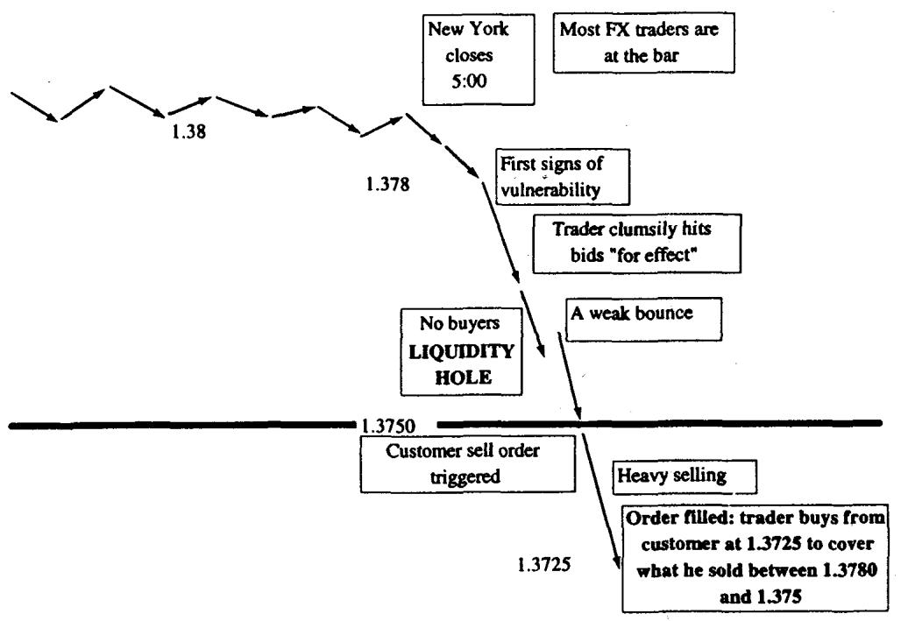

第四章：流动性与流动性洞（Liquidity and Liquidity Holes）
The market is a large movie theater with a small door. —— An options veteran
导读：本章要解决的问题
第一章把流动性称为"隐形风险"，放在风险经理脑后；第三章讲做市时反复提到流动性枯竭。第四章把这个隐形风险拉到台前，专门处理它。Taleb 在开篇就给了一句话定位：本章应在学习障碍期权之前读。原因下面会清楚，障碍期权和止损单一样，是把流动性洞内生地制造出来的结构。
这一章要回答的核心问题是：当模型假设的"可以按中价、连续、无限量地调仓"在真实市场里失效时，会发生什么，损失从哪里来，以及这对期权定价和动态对冲意味着什么。 对一个金融工程读者，本章最该吸收的是两层认识。第一层是流动性的实务解剖：滑点怎么算、流动性洞怎么形成、止损和障碍期权如何把单向的强制交易喂给市场。第二层、也是更刺穿理论的一层，是 Taleb 对 BSM 基石的攻击：流动性洞暴露了 Markov 假设的脆弱。无记忆几何布朗运动假定"到达当前价的路径无关紧要"，但止损和障碍让下一个价格变动依赖于上一个，过程有了记忆，无套利复制赖以成立的前提被侵蚀。
把全章压缩成五条主线：
- 流动性是交易的一切来源，滑点（slippage）是它的实务度量，且随成交规模、波动率、时区重叠而恶化。
- 流动性洞是均衡机制的临时失灵：低价引来加速的供给、高价引来加速的需求，价格的常规负反馈反转成正反馈。
- 止损单和障碍期权是不可撤销的或有强制大单，持有信息的人有动机去触发它们，由此制造可预测的单向价格运动。
- 这种可预测的路径破坏了布朗运动的 Markov 性，市场因此"有记忆"，新高新低附近的躁动就是证据。
- 交易成本进入期权定价后，盈亏平衡波动率随 gamma 符号上下偏移（Leland、Whalley-Wilmott），long gamma 用限价单、short gamma 用止损单。
下面沿原文小节顺序展开，并在每个节点补全理论映射。
一、流动性与滑点（Liquidity and Slippage）
流动性定义为操作者就给定的一块证券进出市场的难易程度。Taleb 把它抬到极高的位置：如果要一句话概括交易（相对于投资）是关于什么的，最好的答案是对流动性的充分管理和理解。流动性是市场相关一切事物的源头。
滑点（slippage）是从业者衡量流动性的指标。给定一个要执行的数量，它等于平均成交价与初始 bid/offer 中点之间的偏差。滑点对某个特定商品未必是流动性的精确度量，但它在不同市场之间提供了一个可靠的比较性度量。学术界给出过若干流动性度量，大多用成交笔数或买卖价差。
滑点的例子：一个基金经理需要做多日元兑美元。CME 上的 115 calls 报价 88/92，理论中价在 90。他会估计：买 4000 张合约时，第一个 1000 张要付 92，下一个 1000 张付 93，余下 2000 张一路付到 98，因为他买入会让期权交易员去对冲他们的 delta、从而把货币本身推高。加权平均价是 95.25，整个执行的滑点是 5.25 个 tick。他平仓时应当做同样的预留（假设选同一时段）。市场更波动时滑点更大（而那恰恰是基金经理可能觉得更值得介入或平仓的时候），时区重叠减少了总参与者数量时也一样。
这个例子里有一个值得标记的机制：买期权会通过期权交易员的 delta 对冲推高标的。基金经理买 call，做市商卖 call 后 short delta，必须买标的对冲，于是现货被推高、期权更贵，买家的滑点被自己的对冲需求放大。这是第一章"对冲制造维度"在流动性层面的回声。
滑点是杠杆对冲基金限制管理资本规模的主要原因。他们的总美元收益可能上升（若盈利），但百分比收益相应下降。Taleb 给了一个反讽的观察：滑点成本常常在大额成交时消失，因为许多大交易员能用买入力撑起他们正在建仓的市场，行情往往上涨并稳定在最后一笔买单成交的价位。代价总在退出时支付，平仓的滑点无可避免。
理论映射：滑点是凸的执行成本，是 BSM "无限可分、零冲击" 假设的破口
滑点把 BSM 的一个隐含假设撕开：经典复制假定交易者是价格接受者，可以按市价无限量、无冲击地成交。现实里成交价是成交量的递增函数，市场冲击（market impact）使执行成本对规模呈凸性。把单位冲击近似写成线性，执行 份的总滑点成本约为
其中 是市场深度的倒数（深度越浅、 越大）。成本对 的二次增长正是"基金限制规模、百分比收益随规模下降"的根：美元收益 线性增长，成本 二次增长，净百分比收益 随 递减。 还随波动率上升、随参与者减少（时区重叠）而放大，这就解释了为什么 Taleb 说波动时段和时区缝隙里滑点最重。这一项在后面的 Leland 公式里会以"再平衡的往返成本 "的身份正式进入波动率调整。
二、流动性洞（Liquidity Holes）
流动性洞，或叫黑洞，是市场里一个临时事件，它暂停了达成均衡的常规机制。它是自由市场机制里的一次信息故障，能对公司造成可观损害。实务上，它表现为低价带来加速的供给、高价带来加速的需求，常规的价格负反馈被反转成正反馈。
流动性洞归因于信息最初影响市场的方式。典型地，当操作者意识到一条重大信息（一个事件，或市场里一笔大单），却无法判断它的规模和可能影响时，流动性洞就出现了。信息引发焦虑、阴谋论和价格冲突。多数时候操作者需要解读信息。市场本应按"新闻与初始预期之差"的程度移动，但后者通常未知、且难以精确估计。一个政治声明或一个经济数据的发布，可以通过扰乱正常的价格决定过程制造流动性洞。
当一个止损单被执行时，操作者会因意识到这个订单、却得不到关于其规模的进一步信息而僵住。许多人暂时中止交易，于是市场摆动得更剧烈。Taleb 点出关键放大器：流动性洞本不会太危险，坏就坏在非线性衍生品有巨大的未平仓量，一些操作者持有必须执行、不管做市商价差如何的大额或有订单。障碍期权（敲入、敲出）常常是流动性洞、以及由此产生的日内波动的罪魁。
理论映射：流动性洞是负反馈反转为正反馈，均衡从稳定变不稳定
正常市场的价格机制是负反馈：价格上涨抑制需求、刺激供给，把价格拉回均衡，这对应一个稳定不动点。流动性洞是这个反馈符号的局部反转。当存在大量随价格触发的或有订单（止损、障碍对冲），价格下跌不再吸引买盘，反而触发更多卖盘（止损被打、敲出对冲抛售），需求曲线在该区域向上倾斜。用动力系统的语言，均衡点的局部斜率从负变正，稳定不动点变成不稳定不动点，微小扰动被放大而非衰减。这就是 Taleb 说的"低价带来加速供给"。它也解释了为什么一个占总成交 0.2% 的订单能撼动日成交万亿的市场，在反馈反号的区域，撬动均衡所需的力量与总成交量无关，只与触发订单的密集程度有关。
三、流动性与风险管理（Liquidity and Risk Management）
Taleb 再三强调：流动性是最严重的风险管理问题。大部分意外损失，要么来自流动性不足造成的市场跳跃，要么来自把市场大幅推向自己头寸反方向的清算成本。清算成本通常被低估，因为当某人被迫采取市场行动时，其他操作者往往会"退避（fade）"，撤掉报价、让出空间。
这一节直接连到模块 E 的 value at risk。Taleb 指出 VaR 的一个要命疏漏：大多数模拟在止损边界处排除了清算成本。市场对开始平仓的操作者毫不留情，尤其当清算方别无选择时。既然强制清算发生在承压的市场里，就可以想象流动性下降对组合平仓的影响有多大。
理论映射：VaR 假设位置可在分位点平价了结，忽略了清算的内生冲击
标准 VaR 计算的是持有期末头寸价值的某个分位点，隐含假设是你能在那个市价上平掉头寸。这把清算当成对价格无影响的外生事件。但 Taleb 的论点是清算本身是内生的、且发生在最坏时刻：被迫平仓时市场已承压（ 已经放大），而你的抛售又进一步推低价格。真实的尾部损失应当是
而且这两项正相关，承压时 最大、被迫清算的概率最高，二者在尾部同时爆发。这与第三章对 VaR 的批评（相关性在压力下崩坏）是同源的：VaR 在最需要它准确的尾部，恰恰因为忽略了流动性的内生性而系统性低估风险。
四、止损单与不流动性的路径（Stop Orders and the Path of Illiquidity）
Taleb 先给两个基础定义：
- 止损单（stop-loss order）：在价格于屏幕上打印出某水平时买入或卖出给定数量的指令，对成交价无条件。买入止损通常高于市价，卖出止损通常低于市价。
- 限价单（limit order）：在市场某预定价格买入或卖出给定数量的指令。市场规则保证没有价格能在不成交该订单的情况下"穿过"它。
试图按成交量来衡量市场是一桩骗人的事。市场不是线性的，也不会有序地达成均衡。信息可以有害、也可以有益。在某些条件被满足时一条路径的确定性（一条条件路径）能制造这种缺口。 止损的机制能照亮"路径确定性"这个问题。现金产品里的止损是被市场到达某水平所触发的买卖单，因而它们像触发期权（trigger options）。一个在 SP500、624.00 买 500 手的止损，会在该水平出现官方打印时触发 broker 开始按任意价格买入。客户通常在市场里留止损来保护利润、限制损失，或在某个魔法水平被触及时入场。多数受训交易员被要求为每个未平仓头寸留止损，因为老板怕他们破坏纪律。
既然止损保证一笔订单成交，就可以理解某些操作者有动机去触发那些大止损。
加元止损的例子：一个大型欧洲基金经理在纽约时间中午回家前，给一家加拿大银行一个 3 亿美元兑加元的止损。加元当前兑美元在 1.38，他谨慎地把止损放在 1.3750，鉴于加元的低波动这是个足够远的水平。持有这个订单的交易员知道，若美元下跌他手里可能握着一个有趣的资产。几小时无事，直到纽约交易员注意到加元跌到了 1.3780。他于是判断：只要不在任何地方撞上真实买单，他就能把市场推向止损。他可以卖出一大块美元，因为他确定能从自己手里那个 1.3750 的订单买回来。于是他尽可能笨拙地卖出 3 亿，盼着市场保持脆弱，直到客户的止损被打。他的激进卖出，不会像正常市场动态所暗示的那样招来更多买家，反而会让操作者因怀疑一条自己不掌握的信息而袖手旁观。

图 4.1 描绘了与这个止损相关的流动性洞：价格被推向触发价时，常规的买盘没有出现，市场出现一段真空。交易所里多数交易员都按同一原则运作，那就是或有的、被迫的大额交易。他们不需要确切信息，从 broker 在止损水平临近时的行为，就很容易嗅到止损在哪。
理论映射：止损 = 客户免费送出的触发期权，触发者在做单向 front-running
止损在结构上等价于客户免费写给市场的一个触发期权（trigger / one-touch option）。客户说"价格触及 1.3750 就无条件卖出 3 亿"，等于把一个 one-touch 的执行权交给了任何能观察到这个订单的人。持有信息的交易员的最优策略是经典的 front-running：在触发价之前先建立空头，把价格推向触发价，触发后用客户的止损单平掉自己的头寸并获利。这之所以可行，是因为止损是无条件成交、对价格不敏感的，它把一个价格不敏感的强制需求注入市场，恰好制造了第二节那个反馈反号的区域。下一节会看到，障碍期权把这件事推到极致，因为障碍连"可以撤单"这点缓和都没有。
五、障碍期权与流动性真空（Barrier Options and the Liquidity Vacuum）
近期市场的许多波动是障碍期权触发造成的。随着它们开始泛滥，市场里无法解释的跳空也开始出现。前一节里大止损是一个免费期权，但止损可以被取消，或被太晚交给交易员以致他无法妥善利用。触发期权不提供这些缓和特征：它远早地摆在做市商面前，且本质上不可撤销。
账上有敲出期权的期权交易员，会下一个以期权终止为条件的平 delta 订单。他不介意止损被打，因为这点小伤亡会被"提前了结一项负债（那个空头期权）"所抵消。如果处理得当，他还能从执行自己的止损中获利。
英镑敲出 call 的例子（本章最精彩的实务推演）：英镑在 1.6000 USD/GBP 交易。一个交易员 short 了 2 亿英镑（合 3.2 亿美元）名义、3 个月到期、行权价 1.60、敲出价 1.59 的英镑 call。他知道只要 1.5900 在街上一处或多处打印并成交，他的期权就被终止。期权 delta 是 78%，他对着它持有 1.56 亿英镑（多头对冲）。
交易员快速判断把货币打到 1.5900 以下需要什么。赌注很大，他有动机去触发 1.5900：除了消掉期权，他还能在过程中靠玩弄止损信息赚钱，只不过这次止损是他自己的。他面对两个选择：把订单"卖"给现货台、付 0.10 pips（20 万美元）请现货台替他操纵市场；或者触发自己的止损。后者要等英镑第一次下跌。止损在英格兰银行（"老太太"）回家后、纽约下午更容易触发，最好的时间是纽约收盘、市场轮到悉尼和惠灵顿之后，不过欧洲收盘后英镑就已经足够不流动以达成此目的。
交易员会在英镑下跌时卖出大部分对冲：1.5945 卖 30，软化市场；然后 1.5930 卖 20、1.5920 卖 25、1.5910 卖 20。当前共卖了 95（要平的 156 中），若市场反弹他可能有麻烦。更好的做法也许是用剩下的 65 激进地报出英镑、给市场施压：1.5900 卖 30，并希望看到 1.5890 成交以确保触发成交无法被争议；然后把余额在 1.5895 和 1.5890 拆给几个对手方，让自己的成交无可辩驳。一些对手方在缺乏充分成交证据时可能合法地质疑触发，通过和两家有声誉的公司完成交易，他能为自己辩护。
Taleb 给出本章最重的理论判断：这种对商品路径的影响，削弱了布朗运动的 Markov 成分，过程现在有了记忆。 障碍和止损能让下一个价格变动依赖于前一个，远离 1.60 的下跌引发了加速。投资组合保险的灾难里发生过类似但更温和的效应：local 们察觉到一个大玩家、其下一步取决于过去的市场移动，并从中获利。
理论映射：触发对冲让过程非 Markov，无套利复制的根基被侵蚀
这一段值得反复读，因为它直击 BSM 的命门。几何布朗运动是 Markov 的：
漂移和扩散只依赖当前 ，与到达 的路径无关。无套利复制（Black-Scholes 推导）正是建立在这个无记忆性上，连续、无冲击地按 delta 调仓就能复制任意支付。障碍期权的对冲行为打破了这一点：当价格逼近 1.59，存在一个可预测的、由障碍清算者制造的单向价格运动。于是下一个增量 不再只依赖 ，而依赖"市场最近是否在向障碍移动"这条路径信息，过程获得了记忆，变成非 Markov。
形式上，这等价于扩散项里出现了路径依赖的漂移：在障碍邻域， 依赖于整条 而非仅 ，价格出现局部正自相关（动量），与第三章正常时段的负自相关恰好相反。后果是深刻的：障碍期权的"理论价"是在 Markov、无操纵假设下用反射原理算出来的，而真实市场里触发点附近的路径被内生地扭曲，模型价与可对冲价之间裂开一道缝。这就是 Taleb 要求"学障碍期权前先读本章"的原因，障碍期权的真正风险不在定价公式，而在它把流动性洞焊死在一个价格点上、并诱使所有持仓者去操纵那个点。
六、单向流动性陷阱（One-Way Liquidity Traps）
许多市场，尤其是有偏资产（biased assets，频繁恐慌的市场），会呈现价格的非对称行为。操作者在进场时体验到一种骗人的流动性，进去之后才痛苦地发现出场是另一回事，在流动性洞发生时尤其如此。交易员在有偏资产上长期短缺的虚值 put 上，就经历这种失衡（见第 15 章）。
这一节很短，但点出一个重要的不对称：流动性本身是方向性的、有偏的。进场容易不代表出场容易，恐慌市场里 put 的需求是单向的（人人都想买保护、没人愿意卖），导致虚值 put 长期短缺、买得到卖不掉。这与第三章"价值交易者逆 skew 买 put 卖 call"的风险直接相关：你以为捡了便宜的波动率差，可能正落进一个出不来的单向陷阱。
七、洞、Black-Scholes 与记忆之弊（Holes, Black-Scholes, and the Ills of Memory）
现代期权定价理论里套利推导方法背后的原理，是无记忆的布朗运动，它不记得现货是从哪里来到最后这个价的。这个假设似乎正受到各路金融理论家和交易员的围攻，关于"过去信息与市场价格行为之间存在某种依赖"的新理论占了上风。不必陷入混沌理论的时髦，似乎确有一些很可敬的、基于非线性依赖的理论，这种依赖此前被常规统计机器所漏检。市场或许终究是有某种记忆的。
在期权交易员层面，尽管多数工具的成交量在增加，市场有效性看起来仍不可达。相关的是，流动性洞展示了 Markov 假设的弱点，因为到达最后一个价的路径变得相当有意义。以市场触及某水平为条件，会有某个障碍期权清算者制造的可预测价格行为，把市场推向某个已知方向。
即便最流动的市场，也在最流动的时刻显出尖锐的弱点。一个日成交万亿的市场为何能被一个仅占总成交 0.2% 的订单影响，并不能被完全解释；流动性洞的经历为何没有带来免疫力（市场本应把洞当作已知事件、通过适当预期去调整其发生），也无法解释。一个显示市场有记忆的事实，是任何市场创新低或新高时周围的噪声水平和狂热活动，无关导致那里的实际波动率。触及新高新低的市场开始以跳空方式移动，止损常常需要被处理。
理论映射：有记忆 ⇒ 非鞅可预测性，但被流动性成本锁住
这一节是第三章自相关讨论的延伸，也是对 efficient market hypothesis 的限定。Markov 性和鞅性是 BSM 的两块基石：Markov 让 delta 复制成立，鞅（在风险中性测度下）让无套利定价成立。Taleb 的论点是流动性洞同时挑战两者。在障碍和止损密集的区域，价格出现可预测的方向性，
即出现了局部的非鞅可预测性（动量）。但这不构成普通人的套利机会，因为提取它需要在正确时点、以低成本交易，而那恰恰是流动性最差、价差最宽的时刻。可预测性被流动性成本锁住，只有时空占优的做市商和障碍清算者能提取。这解释了 Taleb 的悖论：市场"有记忆"却没人能轻易免疫或套利。新高新低附近的跳空，本质是止损与障碍的密度在那些心理价位最高，触发的或有订单把局部反馈推成正号。
八、限制与市场失灵（Limits and Market Failures）
交易所似乎明白自由市场会出现失灵，并介入、在一定事件累积后暂停交易。SP500（所有流动性洞之母）里的"熔断（circuit breakers）"，会在开盘落在某区间内时把市场停五分钟，然后逐步设立更宽的交易限制。熔断自 1987 年股灾以来似乎是有效的，至少作为心理缓冲、以及让交易员在恢复交易前深呼吸、评估可用信息的手段。它们已被例行触发，看起来是一个成功的实验。
理论上，熔断是一个外生施加的、强制冷却的时间窗，用来打断第二节那个正反馈循环。当价格机制陷入"低价引来更多卖盘"的不稳定区域，流动性已经蒸发，再多的流动性也注入不进来；能阻止雪崩的办法只剩暂停时钟，让信息扩散、让初始预期重新形成，把系统推回负反馈的稳定域。这是承认"市场无法靠自身在流动性洞里达成均衡"的制度性补丁。
九、反向滑点（Reverse Slippage）
一些交易员擅长悄悄积累证券、制造短缺；然后注意到余额或订单流已转向对自己有利，就能让市场朝自己的方向移动。他们享受正滑点（positive slippage）。反讽的是，在不流动市场执行一个大单可能盈利，执行一个小单反而不盈利。
反向滑点发生在：买入狂潮里以持续更高的价格积累、卖出狂潮里以更低价格积累。在那个阶段，积累方每天的盯市都会改善。通常积累方在期末"掘"市场，开始笨拙地买入、把价格推高到能引出止损单的程度。
然而危险主要在退出交易时。交易员不能像建仓阶段那样推动市场，否则会造成自己的崩溃。在不流动市场尤其是交易所里，活动会被迅速察觉。交易员能辨认出一个活动来源的印记，无论它伪装得多好，他们会对一个正在出场的交易员毫不留情，因为他们对其规模有概念。出场方没有像积累方那样中途停下的自由。 反向滑点曾让一些基金经理盈利，他们制造了足够大的逼空（squeeze），从而以一个价格卸掉了自己全部库存的一大部分。
理论映射：滑点的符号取决于你和订单流的同向还是逆向
反向滑点说明滑点不是一个恒正的摩擦项，它的符号取决于你的交易方向与瞬时净订单流的关系。常规滑点（第一节）假设你是流动性的需求方，逆着深度成交、付出冲击成本；反向滑点里，积累方在建仓阶段是沿着别人制造的趋势成交，市场冲击为他的存量头寸贡献正的盯市。但这是一个不可持续的镜像：建仓时你藏在订单流里、可随时停手（你是可选的），平仓时你的规模已暴露、对手会 fade，且你必须出清（你是被迫的）。这正是第三节"被迫清算"不对称性的另一面，optionality 在建仓方手里、在平仓方手里消失，与第三章深度实值期权"失去 optionality 像期货"的逻辑同构。
十、流动性与三重巫时（Liquidity and Triple Witching Hour）
股指结算的机制会被专家（specialist）和股票做市商大量滥用，他们能借此诱导市场出现临时跳空、制造对自己有利的流动性洞。
例子：一个篮子套利者持有现金、并 short SP500 期货作为完全对冲。合约以现金结算（交易员得到前一日结算价与官方收盘价之差的补偿）。但结算后，交易员仍要平掉他的现金多头。要让套利有效，他需要在接近结算价处拿到一个买价。结算条款规定指数按所有成分股的官方收盘计算。所以程序交易员的最佳方案是用市场里的"市价收盘（market on close）"功能去平掉股票。于是他能和股票专家建立一个心照不宣的契约："我不在乎在哪个价位成交，只要那个数字成为用来计算指数价格的数字。"
专家会用他们的时间和空间优势，把市场移到失衡所在的地方。卖方略多于买方造成的小失衡会带来一个"卖出到期（sell expiration）"。专家知道在被给定的短时间里没机会看到一个买家出价高过他，因此他能以非常有吸引力的价格拿到股票。整个操作发生得很快。值得注意的是，它已经持续了这么久，有效市场却没有调整以适应这个模式。
理论映射：三重巫时是一个结算价被同时用作清算基准和套利结算基准所造成的机制漏洞。套利者只关心收盘数字本身（因为他的期货腿按它现金结算），对这个价格的水平变得不敏感，于是把一个价格不敏感的大单交给了拥有时空优势的专家。这又是第四节"价格不敏感的强制订单制造流动性洞"的同一模板，只不过触发者从障碍清算者换成了股票专家。它持续存在而未被套利掉，因为提取这个 edge 需要时空占优（specialist 的特权地位），普通套利者无法进入。
十一、投资组合保险（Portfolio Insurance）
强制交易造成流动性洞的一个重大例证，是投资组合保险事件。它说明了一种恐慌：一个覆盖约 750 亿到 1000 亿美元、不到管理资产 3% 的程序，竟能造成如此大规模的流动性洞。投资组合保险是否造成了股灾仍有争议，但它加剧了市场运动是确定的。
投资组合保险最初被作为通过动态期权复制技术为资产持有者提供的、对不利市场运动的保护来营销。长期期权流动性的缺失，为用复制代替直接买期权的技术提供了正当理由。人性如此：一个潜在的免费午餐比一个真实的期权更容易卖给基金经理。
作为通过 delta 对冲来复制 put 的方法，投资组合保险是一笔负 gamma 交易。有人会争辩：即便投资组合保险是通过真实期权执行的，做市商也会 short 同样数量的 gamma，从而用他们的负曲率加剧运动。Taleb 的回答是：期权那个"免费"的特征把资本吸引到了资产本身，导致人们比没有这个程序时买入更多股票。关于真实期权与其动态复制等价物之间的差异，见 Grossman（1988）。
Taleb 自述股灾后在 SP500 池里待了一年，试图重构 1987 年 10 月的事件，作为流动性管理的一课。他说每个交易员都该在这样的池里待几个月：起初喧嚣的节奏掩盖了真实活动，过一阵子某种秩序开始从池的行为里浮现，那时人就成了"市场"这个庞大躯体的一部分。
他的结论是：local 们察觉到一个由低价导致的强制卖出模式。那个叫止损的免费品以这种方式可得，是很容易被察觉的。交易员迅速意识到，和止损一样，卖出的决定不会因市场更低而被解除，事实上反而被更低的价格所复合（加重）。对止损单经典的 front-running 被弄得很容易，因为这个程序只有一个论坛可用，且大部分集中在少数几个 broker 手里。一种第六感，local 们称之为"池化学（pit chemistry）"，让他们不费力就能识别市场订单的来源；活在中心化市场之中，他们能识别模式、认出每个玩家的签名。
有人论证投资组合保险是市场均衡达成最坏可能情形的结果：不完美信息。大量焦虑源于对市场信息的无知。在市场里没有订单存在时，做市商很难为期货显示一个买价。也可以得出结论：投资组合保险成了自身初始成功的人质，更小的程序规模不会造成这样的滚雪球效应。
理论映射：动态复制 = short gamma，且复制需求本身是不稳定化的反馈
投资组合保险在数学上就是用 delta 对冲合成一个 long put。复制一个 long put 要求随价格下跌而卖出标的（put 的 delta 随 下跌从 0 趋向 ，为保持复制需不断加空），这正是负 gamma 的再平衡方向：跌时卖、涨时买，与市场同向、放大波动。把它和第二节的反馈反号合起来看，投资组合保险是一台自动化的、规模巨大的正反馈机器：价格下跌 → 复制程序卖出 → 价格进一步下跌 → 卖更多。
Taleb 关于"真实期权 vs 动态复制"的论点尤其深刻，值得记住其理论内核：买一个真实 put，你的对手（期权卖方）确实 short gamma，会同向对冲；但真实期权的存在不会改变标的的需求。而动态复制被当成"免费保护"营销，诱导更多资本进入股票本身，膨胀了底层敞口。一旦下跌触发复制抛售，要平掉的不只是 put 的对冲，还有那些因虚假安全感堆进来的多头。这是 Grossman（1988）的核心：合成期权与真实期权在 Black-Scholes 世界里等价，但在有反馈、有流动性约束的真实市场里不等价，因为合成复制把卖方的对冲流公开化、规模化、并可被 front-run。"成为自身成功的人质"就是这个正反馈在规模足够大时的自我引爆。
十二、流动性与期权定价（Liquidity and Option Pricing）
期权定价文献里对交易成本存在的认识在增长。若干期权理论试图调和市场微观结构理论与期权定价。**Leland（1985）**引入了一个纳入交易成本调整的盈亏平衡波动率（break-even volatility）。这个调整他叫 ，被加到进入 BSM 方程风险中性组合复制的波动率上。对一个卖方，由此得到的盈亏平衡波动率是增广波动率：
其中
是（香草）波动率， 是往返交易成本（百分比）， 是组合连续两次调整之间的时间间隔。
这个公式值得逐项解读，因为它把第一节的滑点直觉变成了可定价的波动率修正。 来自标准正态绝对值的期望 ，因为每次再平衡要买卖的数量正比于价格变动的绝对值； 是每次往返的成本率； 是再平衡间隔。注意 ：再平衡越频繁（ 越小），累积的交易成本越高，调整项越大。这是动态对冲的根本两难，更频繁的对冲降低复制误差（gamma 风险），却线性于 地推高交易成本。Leland 的洞见是把这笔成本折算成一个等价的波动率加点：卖方实际是在比 更高的 上才盈亏平衡。
然而交易员需要考虑：一个期权 book 不会单调地 long 或单调地 short 波动率，盈亏平衡波动率会按头寸方向上调或下调。short premium 的玩家需要更高的波动率才能打平，long premium 的玩家需要更低的波动率。short gamma 用止损支付那个负价差，而 long premium 操作者有 stop-profits（止盈），可能吸收掉一些利润。
**Whalley 与 Wilmott（1993）**把盈亏平衡波动率写成 gamma 符号的简单函数。负 gamma 时是 ，正 gamma 时是 ，于是
这制造了一个变动波动率的局面，以及由此而来的复杂性。
理论映射：交易成本把单一波动率变成依赖头寸的 bid-ask 波动率带
Leland-Whalley-Wilmott 的结果，本质是把交易成本翻译成波动率上的买卖价差。无摩擦 BSM 用单一 给所有人定价；有交易成本后，波动率分裂成一个区间 。卖方（short gamma）必须用上沿 定价才能覆盖再平衡成本，买方（long gamma）只能指望下沿 。 这正是隐含波动率 bid-ask spread 的微观来源，价差宽度由 决定，而 随交易成本 、随再平衡频率 上升。
符号依赖 的深层含义是：交易成本对凸性的两侧不对称地作用。short gamma 者再平衡是"高买低卖"（与市场同向），每次调整都付价差、还撞上扩散的不利方向，所以成本加在波动率上；long gamma 者再平衡是"低买高卖"（逆市场），他可以挂限价单、甚至赚取价差，所以成本是负的、波动率往下调。这给出了下一节那条交易员铁律的理论根据。
期权交易员的规模经济与不对称
在处理交易成本时，期权交易员有巨大的规模经济，因为他们组合里的总净 gamma 有时会等于总毛 gamma（绝对值之和）的几千分之一。也就是说，组合里成百上千个期权的 gamma 大量相互抵消，只剩很小的净额需要对冲，这让任何单个期权的管理成本变得微不足道。这是第三章"单个期权不流动、但希腊字母整体很流动"的定量版：做市商真正要对冲的是净 gamma，而非每个期权的毛 gamma。
另一个更难评估的因素是期权成本的不对称：期权卖方和买方并非彼此的镜像，因为两者的效用函数不同。
交易员铁律：long gamma 用限价单，short gamma 用止损单
期权交易员的口诀：long gamma 时用限价单（limit orders），short gamma 时用止损单（stop orders）。
short gamma 时"坐在 bid 或 offer 上"的交易员被说成"省小钱、误大事（penny-wise and pound-foolish）"，他后面将不得不"追（chase）"市场。反过来，long gamma 时还付价差的交易员是在自欺。"让市场来找你（let the market come to you）"是老练交易员的建议。
表 4.1 给出 short 与 long gamma 在执行次要交易（动态对冲）时的特征：
| Long Gamma | Short Gamma | |
|---|---|---|
| 买入单 | 市场走低时可以买 | 市场走高时必须买 |
| 在市场挂买价，若市场穿过其水平可保证成交 | 留止损单，被给定价格的官方打印触发后变市价单 | |
| 卖出单 | 市场走高时可以卖 | 市场走低时必须卖 |
| 在市场挂卖价，若市场穿过其水平可保证成交 | 留止损单，被官方打印触发后变市价单 |
这张表是本章实务的结晶，它的逻辑链是：gamma 符号决定再平衡方向，再平衡方向决定你是流动性的提供者还是需求者，这又决定你该用限价单还是止损单。
short gamma 者的再平衡是顺势的（涨了要追买、跌了要追卖），他没有选择是否对冲的自由，所有调整都必须承担交易成本，无论他是不是做市商。他用止损单调整 gamma，止损在给定价格官方成交时触发。SP500 在 455.00 的止损会让 order filler 在 455.00 官方成交后按市场最优价买入，成交价是 455.00 加买卖价差，于是产生交易成本。而且价差通常在市场移动时变宽，而这种移动恰恰伴随再平衡的需要，成本雪上加霜。
long gamma 者的再平衡是逆势的（跌了可以买、涨了可以卖），他承担的交易成本更少、甚至没有。老练的 long gamma 玩家的订单与市场反向，他懂得把订单挂在市场里而非不必要地付价差。在官方交易所，订单不能被市场违反，市场不能在不保证成交其订单的情况下穿过它；货币里通过 OTC broker 下的订单也是如此。Taleb（自承属此派、不喜欢 short gamma）主张：一个娴熟的 long premium 交易员实际上能赚取交易成本，因为他能成为现金市场里的二级做市商。 例：SP500 在 449.80，long gamma 的期权做市商可以在 450.00 挂单，市场不成交他的单就不能穿过。假设没有他时市场是 449.50/450.05，他在 450.00 报出，就能指望赚取部分价差。做市商虽能 match，但某种池礼仪给"paper"以和做市商一起成交的权利；在芝加哥这样的池里 broker 很强势、能比 local 拿到更好的成交。于是交易成本被限制在佣金，对大玩家是可忽略的成本。
理论映射：负自相关让 long gamma 的对冲变成赚 edge，与隐含价差
在更进阶的层面，每个已知市场都在短期观测上经历价格的负自相关，这也可解释为均值回复（见第三章图 3.3 的自相关图）。任何关于隐含买卖价差（implicit bid-offer spread）的讨论都应考虑这个效应，隐含价差比名义价差宽，因为后者只能满足小额交易。在一些不太流动的市场（如个股），显性价差比隐含价差宽，因为做市商显示的市场比其交易意图更宽，他们挂出的价格代表一个短期权。这种均值回复让做市商获得 edge，并由此让娴熟的正 gamma 玩家在执行对冲时获利。
这把两条线索缝在了一起。第三章的 bid-ask bounce 制造短期负自相关，对一个 long gamma、用限价单逆市挂单的交易员，这个负自相关正是他的朋友：价格短期反转意味着他挂在 449.50 的买单成交后，价格大概率反弹，他既完成了对冲、又赚了 bounce 那一段。于是 long gamma + 限价单的组合，把交易成本从负 carry 变成了正 edge，这是 Leland 公式里正 gamma 用下沿波动率 的微观实现。而 short gamma 用止损单则恰恰相反，他追的是动量方向，被 bounce 反咬。这解释了为什么 Taleb 个人偏好 long gamma：既出于对凸性的方向偏好，也因为执行机制本身在 long gamma 一侧能提取 edge。
涉及障碍期权时，一个 short 敲出或 long 敲入的娴熟做市商，能操纵市场以改善自己的成交，这又回到第五节的主题，闭合了"流动性洞 → 障碍触发 → 对冲执行"这条贯穿全章的线。
十三、本章综述：理论与实务的对照
第四章把流动性从"风险经理脑后的隐形风险"提到了能撼动 BSM 基石的高度。它的两条暗线，一条是流动性洞如何由价格不敏感的强制订单（止损、障碍、复制程序、结算套利）内生制造，另一条是交易成本如何把单一波动率撑成依赖头寸的波动率带。下表把 Taleb 的实务命题和对应的理论命题对齐。
| Taleb 的实务命题 | 对应的理论命题 |
|---|---|
| 滑点随规模、波动率、时区缝隙恶化 | 市场冲击的凸成本 ；BSM 零冲击假设破口 |
| 流动性洞：低价引来加速供给 | 价格反馈从负反号为正，稳定不动点变不稳定 |
| 0.2% 成交量能撼动万亿市场 | 反馈反号区撬动均衡与总量无关，只与触发订单密度有关 |
| VaR 漏掉止损边界的清算成本 | 分位点平价假设忽略内生冲击，尾部 与被迫清算正相关 |
| 止损是客户免费送的触发期权 | one-touch 期权；价格不敏感强制单 → front-running |
| 障碍期权不可撤销，最危险 | 触发对冲使过程非 Markov，复制根基被侵蚀 |
| 障碍/止损让下一步依赖上一步 | 依赖路径，局部正自相关（动量） |
| 单向流动性陷阱、有偏资产 put 短缺 | 流动性方向性；optionality 在建仓方而非平仓方 |
| 市场"有记忆"却无人免疫 | 局部非鞅可预测性被流动性成本锁住 |
| 熔断有效 | 外生冷却窗打断正反馈，强制回到负反馈稳定域 |
| 反向滑点：大单可盈利、小单不盈利 | 滑点符号取决于与净订单流同向/逆向；建仓有 optionality |
| 三重巫时专家操纵 | 结算价兼作清算与套利基准的机制漏洞 |
| 投资组合保险加剧崩盘 | 动态复制 long put = short gamma 顺势卖出，正反馈机器 |
| 真实期权 ≠ 动态复制 | Grossman：有反馈/流动性约束时合成与真实不等价 |
| Leland 盈亏平衡波动率 | ， |
| 盈亏平衡波动率随头寸方向偏移 | Whalley-Wilmott ，波动率 bid-ask 带 |
| long gamma 用限价单、short gamma 用止损单 | gamma 符号定再平衡方向；long gamma 借负自相关赚 edge |
| 净 gamma 远小于毛 gamma | 组合内对冲的规模经济，希腊字母整体流动 |
核心观点
第一，流动性是交易的第一性问题，不是风险清单上的一项。滑点是它的实务度量，且对规模呈凸性，这从根本上限制了可管理资本的规模，也限制了 BSM "可按中价无限调仓" 假设的适用域。
第二，流动性洞是反馈符号的局部反转。价格不敏感的强制订单（止损、障碍、复制程序、结算套利）把常规的负反馈推成正反馈，让稳定均衡变成不稳定均衡，于是极小的订单能撬动极大的市场。
第三，障碍期权和止损是焊死在价格点上的流动性洞，它们不可撤销、可被提前观察，诱使持有信息者去操纵触发点。这破坏了布朗运动的 Markov 性，是"学障碍期权前先读本章"的真正理由。
第四，市场有记忆，但记忆带来的可预测性被流动性成本锁住。局部动量真实存在（新高新低的跳空、障碍邻域的加速），却只有时空占优者能提取，普通人既无法套利、也无法免疫。
第五，交易成本把单一波动率撑成依赖头寸的波动率带。Leland 把再平衡成本折成波动率加点 ，Whalley-Wilmott 让它随 gamma 符号取正负。卖方用上沿、买方用下沿，这就是隐含波动率 bid-ask 的微观来源，也是动态对冲"频率 vs 成本"两难的定量表达。
第六，gamma 符号决定执行方式。long gamma 逆势再平衡、是流动性提供者，用限价单甚至能借短期负自相关赚 edge；short gamma 顺势再平衡、是流动性需求者，必须用止损单、被价差和动量两头吃。Taleb 对 long gamma 的偏好既是凸性偏好，也是执行机制上的 edge 偏好。
面对一个头寸或一笔大单的操作清单
读完本章，遇到流动性相关的决策，可依次自问：
- 我要执行的规模会产生多大滑点？冲击成本随规模二次增长，这个规模还划算吗？
- 市场里有没有价格不敏感的强制订单（止损、障碍、复制程序）？它们会把反馈推成正号吗？我在洞的哪一侧？
- 我的对冲流是顺势还是逆势？我是流动性的提供者还是需求者？
- 我的 gamma 是正是负？据此该用限价单还是止损单？再平衡频率和交易成本如何权衡（ 有多大）？
- 我的 VaR / 风险模型有没有把止损边界的清算成本算进去？尾部场景里流动性会蒸发吗？
- 这是真实期权还是动态复制？复制需求本身会不会不稳定化市场、并被 front-run？
- 我建仓时藏在订单流里很容易，但出场时规模暴露、对手会 fade，退出路径想清楚了吗？
一句话收束
本章最该记住的一句：模型假设你能按中价、连续、无限量地调仓，而真实市场是一个大影院配一扇小门；流动性洞由价格不敏感的强制订单内生制造，它破坏布朗运动的无记忆性，也把单一波动率撑成依赖你 gamma 符号的买卖价差。